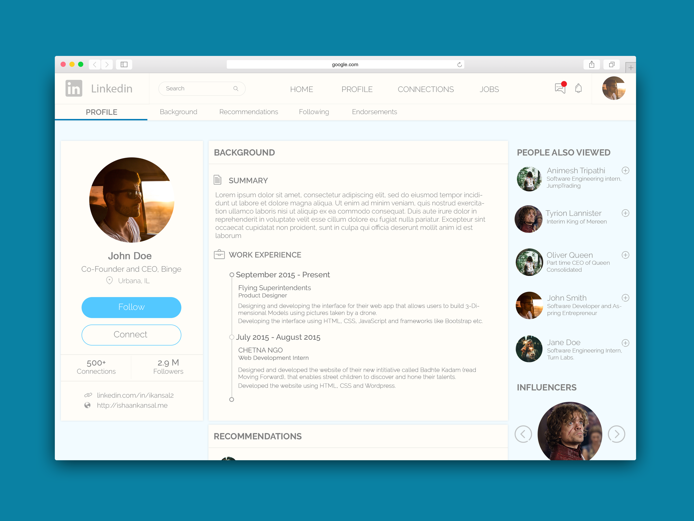

THE IDEA
Linkedin is the world's most popular social networking platform for connecting millions of business personnel. However, despite being one of the top companies in the world, Linkedin still displays a bad design for its website. So, I decided to try and redesign the Linkedin Profile Page to get an idea of what Linkedin could potentially look like with a different design.
USERS & USE CASES
In order to provide a better experience for the user, I had to identify the user base. So I went online and did some research to identify who uses Linkedin and I found facts from a study conducted online in 2012 by Business Insider:
71% of the users are between the ages of 25-50 and around 40% of the users are from The United States.
According to a study by MarketingProfs the most used features of Linkedin are:
1. Who's viewed your Profile
2. People also viewed
3. Endorsements and Skills
4. Recruitment
EXPLORATION AND BRAINSTORMING
After analyzing some use cases, I started working out some ideas that would help enhance the experience. Some problems that I aimed to solve were:
1. Easy Navigation of the Profile Page: When you look at someone's profile there's no way to easily access certain section of the profile like the "Skills and Endorsements" section without scrolling down to the bottom.
2. Unclutter the User Profile Card: The current design of the profile card is very cluttered which results in some problems identifying basic profile information like current job, location, contact details etc.
3. Distinct Layout of Profile Sections: The current design fails to provide distinct differences between different parts of the profile such as Background, Recommendations, Connections, Skills etc.
4. Visually Appealing and Elegant Design
Some solutions that I came up with to solve these are:
1. A second one Page Menu: A second menu that divides the various sections of the page into separate divisions that can then be easily accessed by a single page like menu bar.
2. A clean and simple Profile Card (As shown below)
3. Distinct Cards for Profile Sections A card layout for each particular section. This will not only allow for a layout that's easy on the eyes but will allow for easy development using one division tag for each specific topic.
The sketches are shown below.
HIGH FIDELITY PROTOTYPE
WHAT I WOULD DO DIFFERENTLY
I wasn't able to test the redesign with a lot of the target user base. That's something I will keep in mind for my future projects. I would've also loved to prototype more.